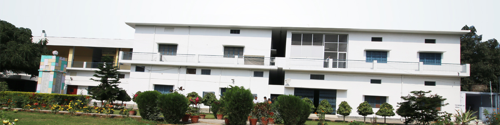

MBA (MASTER OF BUSINESS ADMINISTRATION)
To prepare dynamic global managers capable of answering corprate challenges and demonstrating high ethical and moral standard.
Approved by AICTE, Ministry of HRD, Govt. of India. & Affiliated to Dr. A.P.J. Abdul Kalam Technical University (APJAKTU) formerly (UPTU), Lucknow
Two Years (Four Semesters) Full-Time program.
Eligibility for the MBA Course is Graduate Degree in any discipline, with minimum 50% aggregate marks (or 45% in case of SC/ST Category) from a recognized Indian University or equivalent. Candidates appearing in final examination at graduate level may also apply.
MBA course offers specialization in Marketing, HT, Finance and IT.
Students desirous of taking admission in MBA programme will have to appear in CUET(PG) examination conducted by Dr. A.P.J. Abdul Kalam Technical University (APJAKTU) formerly (UPTU) and should appear in counseling. For 15% management quota seats, direct admissions are taken on the basis of marks obtained in graduation and CAT/MAT/XAT/CMAT percentile followed by Personal Interview